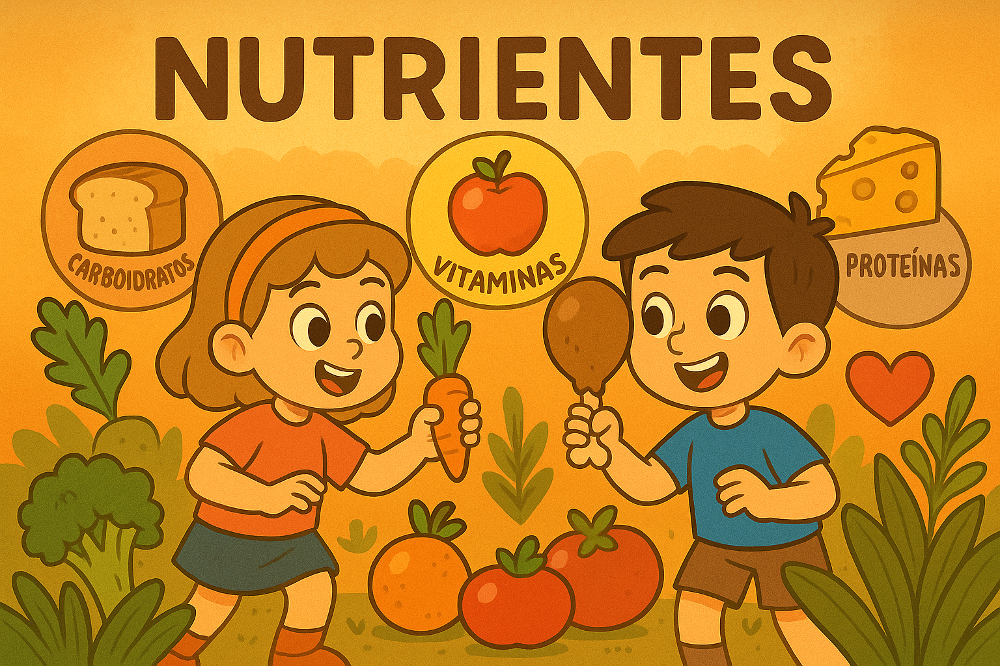

🌿 Módulo dos Nutrientes 🍓

👩🌾 Digite seu nome para começar:
Começar
👤 Jogador:
⭐ Pontos:
0
❤️ Vidas:
5
🔍
🌱 Continuar
🎉 Parabéns,
!
Você completou o módulo de Nutrientes.
📄 Gerar Boletim Detalhado
🔄 Reiniciar
➡️ Voltar ao Início